文档说明：
- OS 版本：
CentOS Linux release 7.9.2009 (Core) - Kernel 版本：
4.20.3-1.el7.elrepo.x86_64 - OpenSSL 版本：
openssl-1.0.2k-21.el7_9.x86_64.rpm - Docker 版本：
20.10.8 - Nginx 版本：
1.22.1 - ✨ HTTPS 在常规 Web 服务器、中间件服务器及
RESTful API等通信中广泛大量使用，因此理解 HTTPS 及相关概念显得尤为重要。 - 该文档使用 openssl 工具创建与管理相关私钥与证书，当然也可使用 cfssl 或 certtool（来源于 gnutls-utils 软件包）工具创建与管理。
文档目录：
- 加密通信背景
- 保证数据的机密性
- 保证数据的真实性与完整性
- 保证传输双方的身份验证
- 数字签名原理
- SSL/TLS 与 CA 相关术语
- SSL/TLS 加密通信要点
- 基于 SSL/TLS 加密连接的 HTTPS 单/双向认证
- HTTPS 单向认证的 Wireshark 抓包分析
- HTTPS 单向认证测试
- HTTPS 双向认证的 Wireshark 抓包与测试
- openssl 常用命令汇总
- openssl 使用数字签名证书的单双向连接测试
- 参考链接
加密通信背景：
- 网络安全问题：
HTTP 不使用 SSL/TLS 进行加密通信，所有信息明文传播，带来了三大风险：- 窃听风险（eavesdropping）：第三方可以获知通信内容
- 篡改风险（tampering）：第三方可以修改通信内容
- 冒充风险（pretending）：第三方可以冒充他人身份参与通信
- 网络安全问题的解决思路：
SSL/TLS协议- 所有信息都是加密传播，第三方无法窃听。
- 具有校验机制，一旦被篡改，通信双方会立刻发现。
- 配备身份证书，防止身份被冒充。
保证数据的机密性：不被窃听
- 🧬 实现方式：对称加密算法
- 💥 单纯的数据加密只能保证数据不被泄露，但不能保证接收方收到的数据的真实性。
保证数据的真实性与完整性：不被篡改
- 数据的真实性：真实数据没有被篡改，数据是从真实发送者发来。
- 🧬 实现方式：消息摘要算法（或称散列算法/单向散列函数）生成数据指纹（特征码）
- 💥 利用提取数据指纹的方式，完成数据传输的完整性验证。
- 🔒 实际的算法实现过程概要：
- 给一段明文数据（plain text）加上数据信息指纹，这个指纹是通过结合数据信息进行相应算法获得的数据指纹。
- 接收方当收到数据信息后，会利用相同的算法对获取的数据计算指纹，确认得到的指纹是否与传送过来的描述数据的指纹一致。
- 如果一致，表示数据没有被篡改过；如果不一致，表示数据完整性遭到破坏，数据一概不予以接收处理。
- 由于可能存在中间人攻击的可能性，因此可对传输过程中的数据指纹进行加密。
- 发送方利用对称密钥方式对手中的指纹进行加密，接收方会利用相同的密钥对手中的指纹进行解密，从而确认指纹是否一致。
- 如果中间人将新的指纹也进行了加密，发送给接收方，但接收方无法利用和发送方协商好的解密密钥对指纹进行解密，最终无法识别中间人发送过来的数据指纹信息。
- 🤘 通过加密指纹可以保证真实数据没有被篡改。
保证传输双方的身份验证：
- 以上信息只是解决数据的交换获取问题，但是网络的身份验证问题依旧没有解决。
- 🧬 实现方式：非对称加密
- 利用非对称加密算法，可以有效解决网络中数据传输双方的安全身份验证问题。
- 💥 非对称加密算法中，存在密钥对的概念，即拥有公钥（
public key）与私钥（private key），其中公钥不是自行创建出来的而是从私钥中提取出来一部分作为公钥，因此可以说公钥是来自于私钥的，而私钥才决定密钥加密的安全性，并且私钥的长度可能会非常长，从最初的 1024、2048 到 4096 一直到更多的位数。增加私钥密钥位，从而提升密钥安全性。 - 非对称加密算法遵循的基本原则：公钥加密的只能利用与之配对的私钥进行解密，反之亦然。
- 非对称加密算法可以满足数据传输过程中对传输者身份验证的需求，因为接收者可以拥有相应的公钥，只有与之对应的发送者用相应的私钥进行加密信息，接收者用对应的公钥才可解密，否则可以确认发送者身份已经发生变化。
🦄 数字签名原理：
- 公钥加密算法 解决通信双方身份验证问题，但无法确保公钥的真实性。
- 因此，CA 数字签名使用证书授权中心（Certification Authority，简称
CA）解决通信双方交换的公钥的真实性，即数字证书的真实性（公钥包含于数字证书中）。 - 数字签名证书的分类：
- 自签名数字签名证书：
不使用ca.key加密生成签名，使用自身的私钥加密生成签名，如GnuPG邮件加密传输。 - CA 数字签名证书：
使用 CA 证书授权中心的ca.key与ca.crt进行加密生成签名，如kube-apiserver、Apache、Nginx、Tomcat 等，以下讨论该类型证书。
- 自签名数字签名证书：
- 🧬 实现方式：公钥非对称加密算法 + 消息摘要算法
- 标准的
X.509格式的 CA 数字签名证书组成：- 证书相关信息（C）：明文显示
- 证书的版本信息（Version）
- 证书的序列号（Serial Number，
srl）：每个证书都有一个唯一的证书序列号 - 证书所使用的签名算法：
sha256WithRSAEncryption - 证书的发行机构名称：命名规则一般采用
X.500格式（目录服务协议 X.500） - ⏱ 证书的有效期：现在通用的证书一般采用 UTC 时间格式，计时范围为 1950-2049。
- 证书所有人的名称：命名规则一般采用
X.500格式 - 证书所有人的公钥信息
- CA 数字签名校验码
- 证书数字签名（S）：密文显示
- 证书发行者（CA 证书授权中心）使用 CA 私钥加密生成签名
- 证书相关信息（C）：明文显示
🔥 CA 数字签名证书生成过程：
- 该生成过程满足函数表达式：
S = F(Digest(C)) - 其中 S 为证书数字签名，F 为签名算法，Digest 为消息摘要算法（MD5/SHA1/SHA256等），C 为证书相关信息。
- 1️⃣ 服务端或客户端创建各自的私钥，并使用该私钥创建
csr证书签名请求。 - 2️⃣ 服务端或客户端的
csr证书签名请求文件中包含证书相关信息 C 与相应的公钥信息。 - 3️⃣ 使用消息摘要算法对证书相关信息 C 生成相应指纹（fingerprint），再使用 CA 私钥（ca.key）配合 CA 根证书（ca.crt）加密该指纹，最后生成服务端或客户端的 CA 数字签名证书。
- 该 CA 数字签名只能被 CA 私钥（ca.key）对应位于 CA 根证书中的 CA 公钥解开。
创建过程如下所示：也可参考该 链接 以获得以下过程的完整脚本
1
2
3
4
5
6
7
8
9
10
11
12
13
14
15
16
17
18
19
20
21
22
23
24
25
26$ openssl genrsa -out CA-center.key 2048
$ openssl req -key CA-center.key \
-subj "/C=CN/ST=Shanghai/L=Shanghai/O=RedHat/OU=GLS/CN=CA-center.lab.example.com" \
-new -x509 -days 3650 -out CA-center.crt
# 创建 CA 私钥与 CA 根证书（自签名）
$ openssl x509 -noout -text -in CA-center.crt
Certificate:
Data:
Version: 3 (0x2)
Serial Number:
fb:53:9c:3c:4d:81:f6:de
Signature Algorithm: sha256WithRSAEncryption
Issuer: C=CN, ST=Shanghai, L=Shanghai, O=RedHat, OU=GLS, CN=CA-center.lab.example.com
Validity
Not Before: Jan 2 14:04:46 2023 GMT
Not After : Dec 30 14:04:46 2032 GMT
Subject: C=CN, ST=Shanghai, L=Shanghai, O=RedHat, OU=GLS, CN=CA-center.lab.example.com
# 由于使用 CA 私钥自签名生成的 CA 根证书，其证书发行机构与所有人相同。
Subject Public Key Info:
Public Key Algorithm: rsaEncryption
Public-Key: (2048 bit)
Modulus:
00:bf:9a:3d:48:8c:b9:21:cb:d4:e5:30:df:4a:0e:
05:e1:29:fe:5c:1f:06:4d:fb:89:fe:f5:01:c7:37:
c5:ee:f5:66:8f:2f:bd:48:82:a1:80:1e:00:9d:a0:
...1
2
3
4
5
6
7
8
9
10
11
12
13
14
15
16
17
18
19
20
21
22
23
24
25
26
27
28
29
30
31
32
33
34
35
36
37
38
39
40
41
42
43
44
45
46
47$ openssl genrsa -out server.key 2048
$ openssl req -key server.key \
-subj "/C=CN/ST=Shanghai/L=Shanghai/O=RedHat/OU=GLS/CN=cloud-ctl.lab.example.com" \
-new -out server.csr
$ openssl req -noout -text -in server.csr
Certificate Request:
Data:
Version: 0 (0x0)
Subject: C=CN, ST=Shanghai, L=Shanghai, O=RedHat, OU=GLS, CN=cloud-ctl.lab.example.com
# 需签名服务端证书的所有人
Subject Public Key Info: # csr 证书签名请求中的公钥信息
Public Key Algorithm: rsaEncryption # 公钥加密算法：RSA（不对称加密）
Public-Key: (2048 bit)
Modulus:
00:e0:bd:e9:ff:f5:16:e5:a9:94:9c:61:2f:27:c5:
e9:76:a2:4b:e3:0f:1a:82:7d:7a:f1:bf:52:37:8d:
54:ea:96:39:8c:c9:55:39:d6:5a:ac:03:2d:16:52:
...
# 创建与查看服务端私钥及 csr 证书签名请求文件
$ openssl x509 -req -in server.csr \
-CAkey CA-center.key -CA CA-center.crt -CAcreateserial \
-days 3650 -out server.crt
# 使用 CA 私钥与 CA 根证书签发服务端 CA 数字签名证书
$ openssl x509 -noout -text -in server.crt
Certificate:
Data:
Version: 1 (0x0)
Serial Number:
a9:68:e7:c4:87:87:4e:03
Signature Algorithm: sha256WithRSAEncryption
Issuer: C=CN, ST=Shanghai, L=Shanghai, O=RedHat, OU=GLS, CN=CA-center.lab.example.com
# 服务端 CA 数字签名证书的发行机构（CA 证书授权中心）
Validity
Not Before: Jan 2 14:04:46 2023 GMT
Not After : Dec 30 14:04:46 2032 GMT
Subject: C=CN, ST=Shanghai, L=Shanghai, O=RedHat, OU=GLS, CN=cloud-ctl.lab.example.com
# 服务端 CA 数字签名证书的所有人：服务端信息
Subject Public Key Info:
Public Key Algorithm: rsaEncryption
Public-Key: (2048 bit)
Modulus:
00:e0:bd:e9:ff:f5:16:e5:a9:94:9c:61:2f:27:c5:
e9:76:a2:4b:e3:0f:1a:82:7d:7a:f1:bf:52:37:8d:
54:ea:96:39:8c:c9:55:39:d6:5a:ac:03:2d:16:52:
...
# 该数字签名证书中的服务端公钥信息与其 csr 证书签名请求文件中的相同
- 该生成过程满足函数表达式：
客户端验证证书过程：
- 验证服务端 CA 数字签名：
- 客户端需具有 CA 根证书（ca.crt）
- 客户端对服务端 CA 数字签名的验证满足表达式：
F'(S) = Digest(C) - 客户端将执行两种计算，并将计算结果进行比对：
1️⃣ 由于证书相关信息（C）以明文显示，通过消息摘要算法计算 C 的哈希值。
2️⃣ 使用 CA 公钥解密由服务端通过 CA 私钥加密的 CA 数字签名，获得原始证书相关信息（C）的哈希值。
3️⃣ 若两者结果一致，说明证书有效且来自该 CA，未被篡改；若两者结果不一致，说明证书已被中间人篡改或不来自该 CA。
- 提取服务端公钥：
- CA 数字签名验证通过后，客户端就可以提取出服务端 CA 数字签名证书中的公钥进行通信。
- 🤝 证书验证在
SSL/TLS握手过程的Server Hello Done与Client Key Exchange之间。
- 🚀 验证过程与原理，如下所示：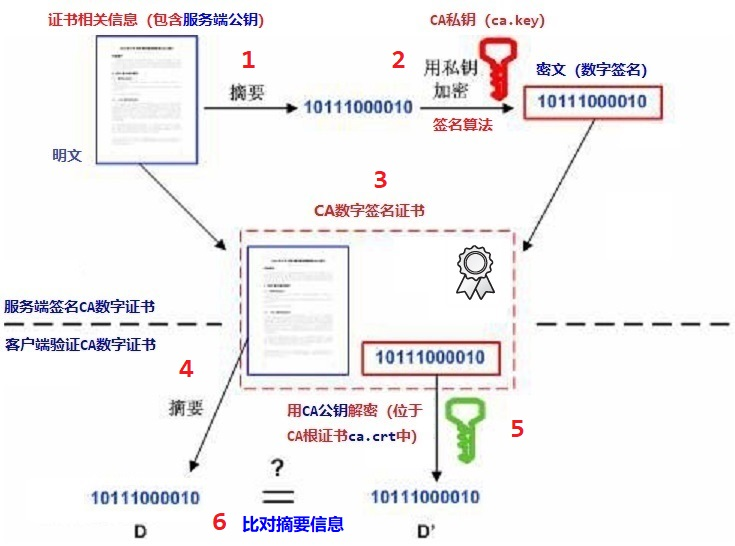
- 验证服务端 CA 数字签名：
SSL/TLS 与 CA 相关术语：
- 证书标准：
X.509 - 编码格式：
- ✨
PEM：- privacy enhanced Mail
- 纯文本形式的编码格式（Base64 编码），Apache 与 *nix 服务器偏向于使用该格式。
DER：- distinguished encoding Rules
- 二进制形式的编码格式，Java 与 Windows 服务器偏向于使用该格式。
- ✨
- 证书（数字签名证书）：certificate（
CER或CRT） - 私钥：private key
- 👉 证书签名请求：
- certificate signing request:
CSR - 该文件使用私钥加密，包含公钥与签名申请者信息等。
- certificate signing request:
- CER 与 CRT 两者都为证书，CRT 在 Linux 上更常见。
- CER、CRT、KEY、CSR 都可为 PEM 或 DER 编码格式！
- 支持 SSL/TLS 协议的开源工具：
openssl、cfssl、gnutls - 📚 man 查看以下命令：
openssl、genrsa、rsa、req、x509、verify、s_client、s_server
SSL/TLS 加密通信要点：
- 安全套接字层协议：Secure Socket Layer（SSL）
- 传输层安全协议：Transport Layer Security（TLS）
- SSL/TLS 历史背景：
- 1994 年，NetScape 公司设计了 SSL 协议的 1.0 版，但未发布。
- 1995 年，NetScape 公司发布 SSL 2.0 版，很快发现有严重漏洞。
- 1996 年，SSL 3.0 版问世，得到大规模应用。
- 1999 年，互联网标准化组织 ISOC 接替 NetScape 公司，发布了 SSL 的升级版
TLS 1.0版。 - 2006 年和 2008 年，TLS 进行了两次升级，分别为 TLS 1.1 版和 TLS 1.2 版。
- 👉 最新的变动是 2011 年
TLS 1.2的修订版。
- TLS 与 SSL 之间的版本对应关系：
- TLS 1.0 对应 SSL 3.1
- TLS 1.1 对应 SSL 3.2
- TLS 1.2 对应 SSL 3.3
- 👉 一般主流浏览器都已经实现了
TLS 1.2的支持。 - SSL/TLS 协议在网络模型中的位置：

- SSL/TLS 协议分为两部分：
- Handshake Protocol：
🤝 协商通信双方之后在本次会话中用于数据加密的会话密钥（session key），该过程为 “握手阶段”，其中会话密钥也称为协商密钥。 - Record Protocol：
定义使用会话密钥加密的数据的传输格式。
- Handshake Protocol：
- SSL 层：
借助下层协议（TCP 层）的的信道安全地协商出一份会话密钥，并用此密钥来加密 HTTP 请求。 - TCP 层：
- 与 Web server 的 443 端口建立连接，传递由 SSL 处理后的数据。
- SSL 在 TCP 之上建立一个加密通道，通过这一层的数据经过了加密，因此达到保密的效果。
- 服务端本地与客户端本地的 SSL 套接字与 TCP 套接字的关系，如下所示：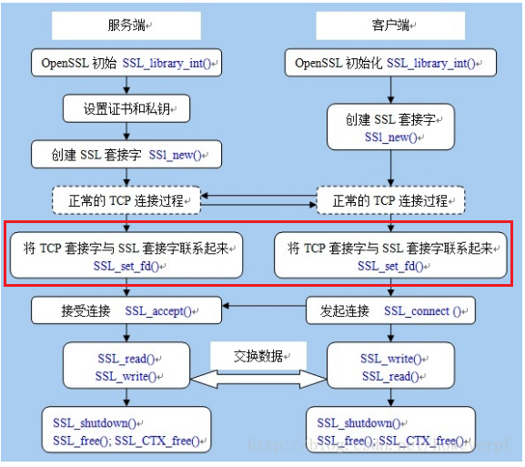
🚀 基于 SSL/TLS 加密连接的 HTTPS 单/双向认证：
- 以上关于服务端 CA 数字签名证书的验证只是 HTTPS 通信中的一部分，需通过其他步骤共同完成 HTTPS 加密通信。
- HTTPS 加密通信认证分为两类：单向认证、双向认证
- 单向认证中只需服务端提供服务端证书与私钥即可，而双向认证中服务端需提供证书与私钥外还需提供 CA 根证书（该证书用于客户端证书的签发），并且客户端需提供客户端证书与私钥。
- 单向认证的过程，客户端从服务端下载服务端公钥证书进行验证，然后建立安全通信通道。
- 双向认证的过程，客户端除了需要从服务端下载服务器的公钥证书进行验证外，还需要把客户端的公钥证书上传到服务端给服务端进行验证，等双方都认证通过了，才开始建立安全通信通道进行数据传输。
- 👨🏫 总结：
无论 HTTPS 单向或双向认证都是客户端与服务端协商出 会话密钥 与 会话加密算法 的过程。 - ✨ 以下从 HTTPS 抓包的角度说明 SSL/TLS 四次握手与 HTTPS 单/双向认证的详细过程：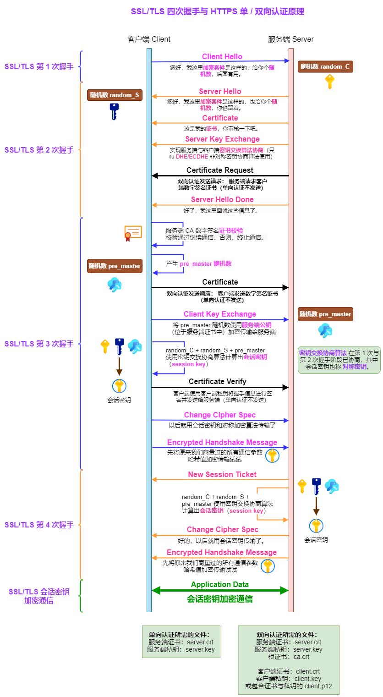上图中 黑色箭头 表示双向认证过程中多出的步骤，其余过程为单向认证过程。
🧪 HTTPS 单向认证的 Wireshark 抓包分析：
- 本例使用
Nginx HTTPS服务测试 HTTPS（HTTP + SSL/TLS）加密通信。 - 使用已配置服务端 CA 数字签名证书的 Nginx 容器测试 HTTPS 加密通信过程，并使用
Wireshark抓包分析。 构建 Nginx 容器使用的 Dockerfile 如下所示：
1
2
3
4
5
6
7
8
9
10
11
12
13
14
15
16
17
18
19
20
21
22
23
24
25
26
27
28
29
30
31
32
33
34
35
36
37
38
39
40
41
42
43# modified date:
# - 2019-12-10: initial Dockerfile
# - 2023-01-16: update nginx and add client ssl authentication
FROM docker.io/library/centos:7.9.2009
MAINTAINER lhua "hualongfeiyyy@163.com"
# install nginx dependent packages
RUN yum repolist && \
yum install -y gcc* && \
yum install -y pcre-devel openssl openssl-devel && \
yum clean all && \
mkdir -p /application/nginx-1.22.1 && \
useradd -u 1005 -M -s /sbin/nologin nginx
# create nginx user to run nginx worker processes
# copy nginx source package to container rootfs
ADD nginx-1.22.1.tar.gz /tmp/
# make install nginx
RUN cd /tmp/nginx-1.22.1 && \
./configure --user=nginx --group=nginx --prefix=/application/nginx-1.22.1 \
--with-http_stub_status_module --with-http_ssl_module && \
make && \
make install && \
ln -s /application/nginx-1.22.1 /application/nginx && \
mkdir /application/nginx/conf/extra && \
mkdir /application/nginx/html/www && \
mkdir /application/nginx/key
# create virtual server, html and key directory.
# copy nginx configuration file, virtual server configuration file and certification file.
ADD nginx.conf /application/nginx/conf/
ADD www.conf /application/nginx/conf/extra/
ADD index.html /application/nginx/html/www/
ADD certs/server.key /application/nginx/key/
ADD certs/server.crt /application/nginx/key/
ADD certs/CA-center.crt /application/nginx/key/
EXPOSE 443
# Note: Don't run nginx as backend daemon
CMD ["/application/nginx/sbin/nginx", "-g", "daemon off;"]Nginx 容器使用的 配置文件，如下所示：
✨ 该配置文件启用 HTTPS 单向认证，若需开启双向认证过程，只需启用ssl_client_certificate与ssl_verify_client参数即可。1
2
3
4
5
6
7
8
9
10
11
12
13
14
15
16
17
18
19
20
21
22
23
24
25
26
27# Web Service: domain-based virtual machine
server {
listen 443;
# alias for domain-based virtual machine
server_name www.etiantian.org etiantian.org;
ssl on; # Nginx 启用 SSL/TLS 验证：指定服务端 CA 数字签名证书与私钥
# enable openssl module to support SSL/TLS
ssl_certificate /application/nginx/key/server.crt;
# server.crt 证书发送至客户端用于验证其身份，客户端使用其中的公钥加密
# pre-master 第三个随机数并发送至服务端协商会话密钥。
ssl_certificate_key /application/nginx/key/server.key;
# server.key 用于解密从客户端发送来的已加密的 pre-master 第三个随机数
#ssl_client_certificate /application/nginx/key/CA-center.crt;
#ssl_verify_client on;
# 启用服务端对客户端 SSL/TLS 双向验证
# 若只需服务端单向验证，无需启用 ssl_client_certificate 与 ssl_verify_client。
ssl_session_timeout 5m;
ssl_protocols TLSv1 TLSv1.1 TLSv1.2;
ssl_ciphers ALL:!DH:!EXPORT:!RC4:+HIGH:+MEDIUM:-LOW:!aNULL:!eNULL;
ssl_prefer_server_ciphers on;
location / {
root html/www;
index index.html index.htm;
}
}抓包 HTTPS 加密通信的三个过程：TCP 建立连接、SSL/TLS 握手、SSL/TLS 加密通信
- HTTPS 加密通信 - 抓包整体示意：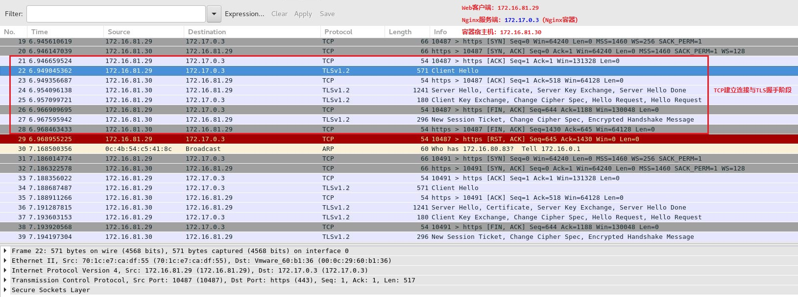
- 🤝 HTTPS 加密通信 - 4 次握手过程示意：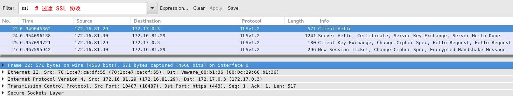👨💻 以下将握手过程分为 4 个阶段进行描述。
- 1️⃣ HTTPS 加密通信 - 第 1 次握手过程：
Client Hello- 客户端首先向服务端发送 Client Hello 的 SSL 握手信息。
- Client Hello 握手信息中包含如下内容：
- 客户端发起请求，以明文传输请求信息，包含版本信息、客户端随机数、加密套件候选列表、压缩算法候选列表、扩展字段等信息。
- 支持的最高 TLS 协议版本，从低到高依次 SSLv2、SSLv3、TLSv1、TLSv1.1、TLSv1.2，当前基本不再使用低于 TLSv1 的版本。
- ✨ 随机数
random_C，用于后续的会话密钥生成。 - 客户端支持的加密套件
Cipher Suites列表，每个加密套件对应 TLS 原理中的四个功能的组合：- 认证算法
Au：身份验证 - 密钥交换算法
KeyExchange：（会话）密钥协商 - 对称加密算法
Enc：信息加密 - 信息摘要
Mac：完整性校验
- 认证算法
- 支持的压缩算法
Compression Methods列表，用于后续的信息压缩传输。 - 扩展字段 Extensions，支持协议与算法的相关参数以及其它辅助信息等，常见的 SNI 就属于扩展字段。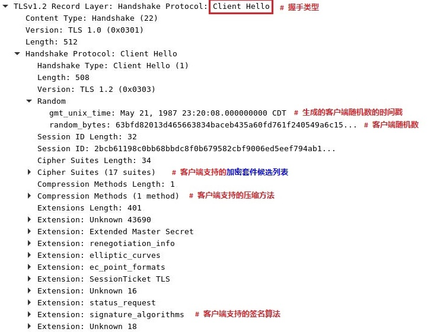
- 客户端支持的 17 种加密套件供服务端选择使用。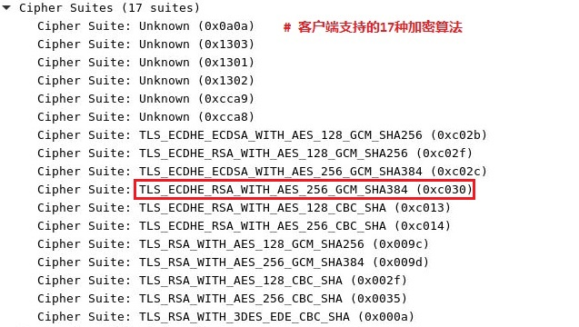
- 2️⃣ HTTPS 加密通信 - 第 2 次握手过程：服务端给客户端回复的 4 条 SSL 握手信息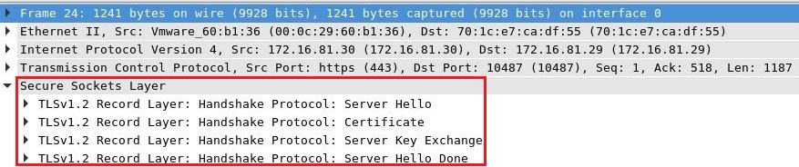
Server Hello：- 服务端返回协商的信息结果，包括选择使用的协议版本、选择的加密套件、选择的压缩算法、随机数
random_S等，其中随机数用于后续的密钥协商。 - 服务端选择 TLS_ECDHE_RSA_WITH_AES_256_GCM_SHA384 作为密钥交互的加密套件，该加密套件的名字在客户端发送给服务器的支持的
17个列表中。 - 该加密套件包含：
- 非对称加密（密钥交换算法）：
ECDHE + RSA - 对称加密算法：
AES + GCM - 消息摘要算法：
SHA-384
- 非对称加密（密钥交换算法）：
- 服务端返回协商的信息结果，包括选择使用的协议版本、选择的加密套件、选择的压缩算法、随机数
Certificate：该 SSL 握手信息中包含服务端 CA 数字签名证书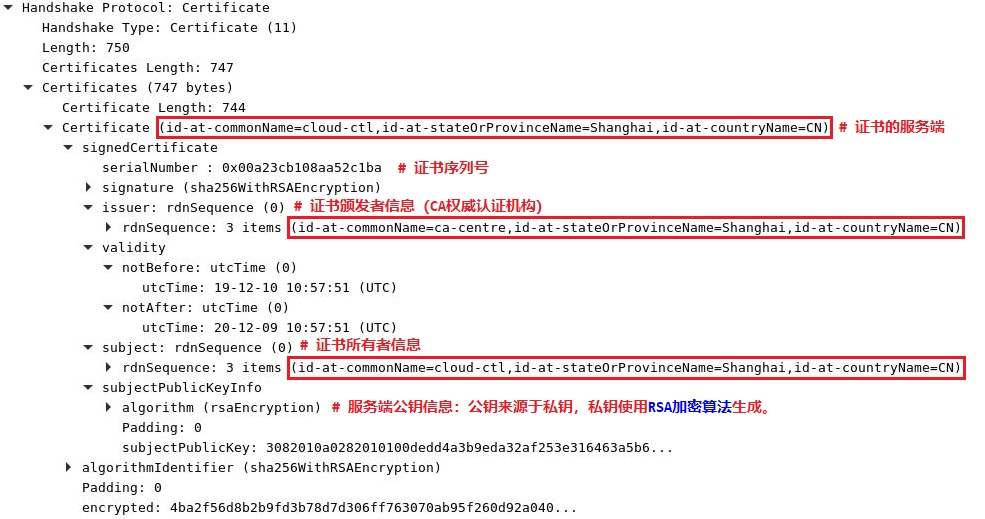Server Key Exchange：
使用EC Diffie-Hellman算法（ECDHE）实现服务端与客户端的密钥交换算法协商。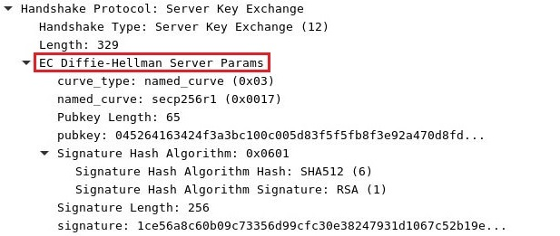
💥 对于使用DHE/ECDHE非对称密钥协商算法的 SSL 握手，将发送该类型握手。RSA、DH、ECDH算法不会进行该 server key exchange 握手流程。Server Hello Done：通知客户端 Server Hello 信息发送结束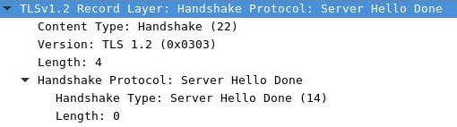
- 3️⃣ HTTPS 加密通信 - 第 3 次握手过程：客户端给服务端回复 3 条 SSL 握手信息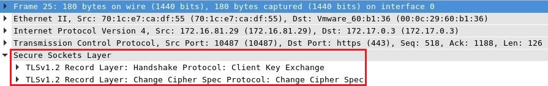
Client Key Exchange：- 服务端 CA 数字签名证书合法性验证通过后，客户端计算产生随机数字
Pre-master，并用服务端证书中的公钥加密，发送给服务端。
💥 注意：服务端证书合法性验证失败，SSL 握手即停止！ - 此时客户端已经获取全部的计算会话密钥需要的信息：
🚀 两个明文随机数random_C和random_S与自己计算产生的Pre-master，计算得到会话密钥。
- 服务端 CA 数字签名证书合法性验证通过后，客户端计算产生随机数字
Change Cipher Spec：
🚀 客户端通知服务端后续的通信都采用协商的 会话密钥 和 会话加密算法 进行加密通信。Encrypted Handshake Message：
结合之前所有通信参数的哈希值生成一段数据，采用会话密钥与加密算法进行加密，然后发送给服务器用于数据与握手验证。
- 4️⃣ HTTPS 加密通信 - 第 4 次握手过程：服务端给客户端回复 2 条 SSL 握手信息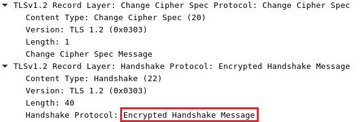
Change Cipher Spec：- 服务端用私钥解密加密的
Pre-master随机数，基于之前交换的两个明文随机数 random_C 和 random_S，计算得到会话密钥。 - 计算之前所有接收信息的哈希值，然后解密客户端发送的
Encrypted Handshake Message，验证会话密钥和数据的准确性。 - Change Cipher Spec 验证通过之后，服务端同样发送 Change Cipher Spec 以告知客户端后续的通信都采用协商的会话密钥与算法进行加密通信。
- 服务端用私钥解密加密的
Encrypted Handshake Message：- 服务器也结合所有当前的通信参数信息生成一段数据并采用会话密钥与加密算法进行加密，并发送到客户端。
- HTTPS 加密通信 - 握手结束：
- 客户端计算所有接收信息的哈希值，并采用会话密钥解密 Encrypted Handshake Message，验证服务器发送的会话密钥和数据，验证通过则握手完成。
- 开始使用会话密钥与加密算法进行加密通信。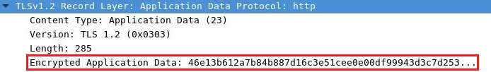
HTTPS 单向认证测试：
- 服务端启用 HTTPS 单向认证后，可从浏览器客户端进行访问测试：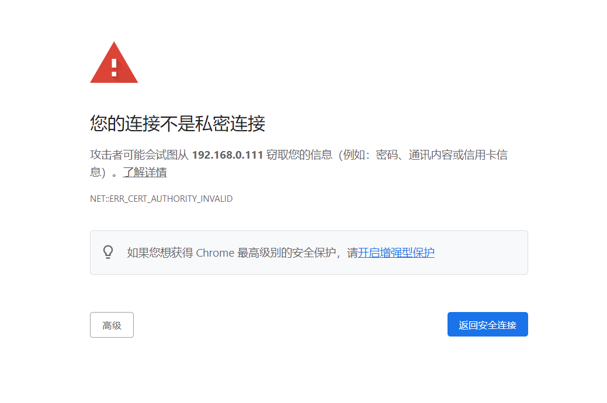
- 该服务端 CA 数字签名使用未经认证的 CA 签发，因此客户端浏览器无法验证其安全性而发出警告，可点击 “高级” 按钮接受该证书继续访问。若拒绝该证书，即断开此次认证连接，可在如下 Wireshark 抓包中显示安全告警信息：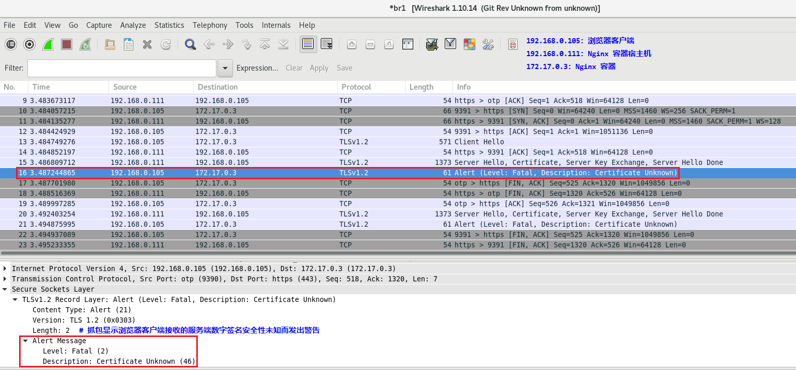
HTTPS 双向认证的 Wireshark 抓包与测试：
- HTTPS 双向认证的 Wireshark 抓包过程如下所示，其中具体的步骤参见前文 “SSL/TLS 四次握手与 HTTPS 单/双向认证的详细过程” 与单向认证的过程。
HTTPS 双向认证过程的客户端测试：
配置生成客户端所需的数字签名证书与私钥：
1
2
3
4
5
6
7$ openssl genrsa -out client.key 2048
$ openssl req -key client.key \
-subj "/C=CN/ST=Shanghai/L=Shanghai/O=RedHat/OU=GLS/CN=firefox" \
-new -out client.csr
$ openssl x509 -req -in client.csr \
-CAkey CA-center.key -CA CA-center.crt -CAcreateserial \
-days 3650 -out client.crt若将客户端数字签名证书与私钥用于
Firefox或Chrome浏览器访问服务端，可将其转换为p12格式：1
2
3$ openssl pkcs12 -export -clcerts \
-in client.crt -inkey client.key -out client.p12
# 创建 client.p12 文件时将交互式输入加密密码将 p12 格式的文件导入 Firefox 浏览器客户端：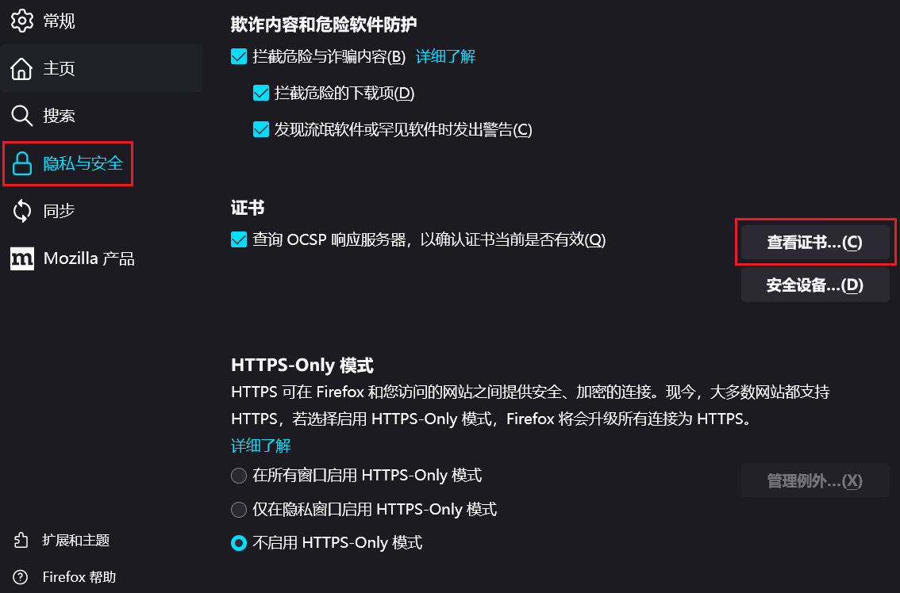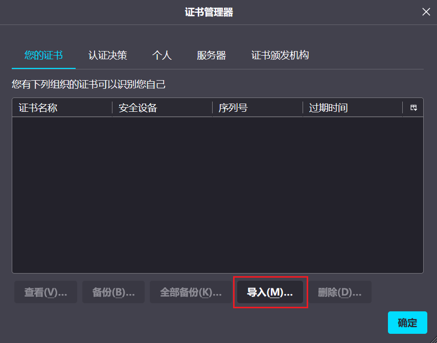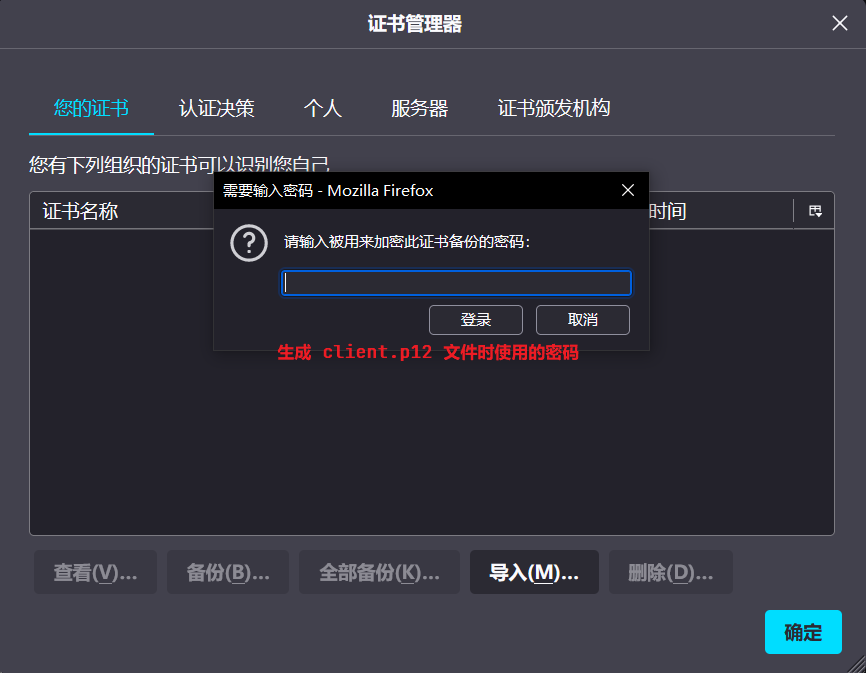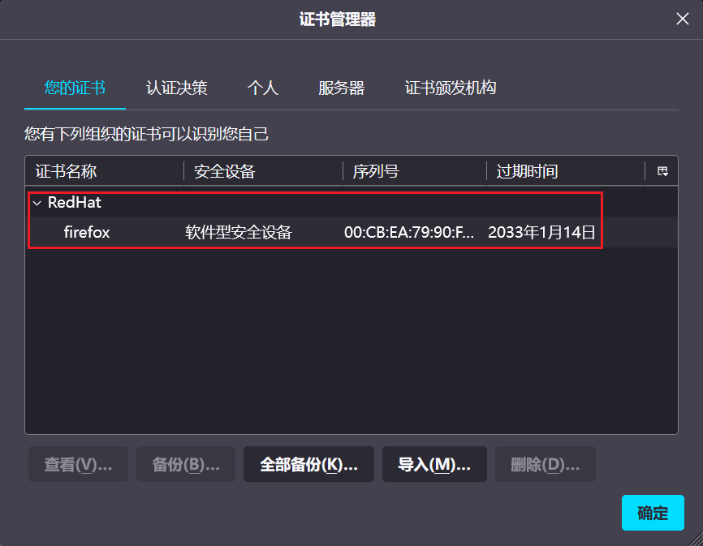
- 打开 Firefox 浏览器访问服务端，此时需接受客户端证书来标记自己：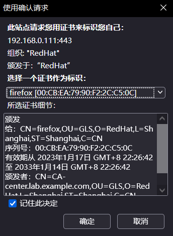
- 💥 若双向认证客户端配置错误，将无法正常访问服务端，并且浏览器直接返回如下信息，且 Wireshark 抓包显示
Encrypted Alert：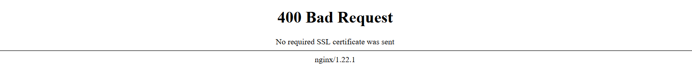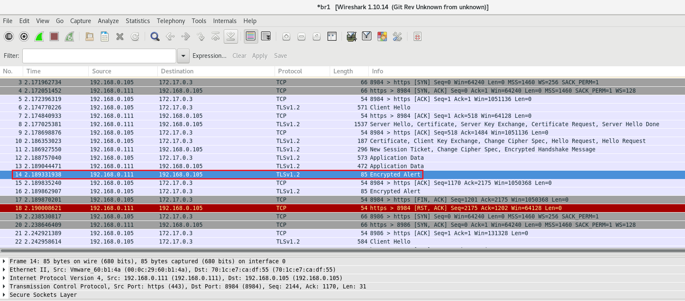
openssl 常用命令汇总：
openssl req命令选项：创建csr证书签名请求与数字签名证书（或自签名证书）1
2
3
4
5
6
7
8
9
10
11
12-key 指定用于创建 csr 证书签名请求的私钥
-newkey alg:nbits 创建新的 csr 证书签名请求与私钥，指定加密算法与加密位数
（通常为 rsa:2048）。
-nodes 不使用密码为新创建的私钥加密
-keyout 指定新创建私钥的文件名
-sha256 使用 SHA-256 摘要（创建自签名数字证书时使用）
-subj 指定创建 csr 证书签名请求与数字签名证书所需的详细信息若未指定
该选项，将进入交互模式。
-new 生成新的 csr 证书签名请求
-x509 生成数字签名证书（不生成证书签名请求）
-days 指定数字签名证书的合法时间（有效期），默认 30 天。
-out 指定输出的 csr 证书签名请求或数字签名证书的名称openssl x509命令选项：创建与查看数字签名证书1
2
3
4
5
6
7
8-req 指定 csr 证书签名请求，与 -in 选项合用。
-in 指定输入文件
-CAkey 指定用于签署证书的 CA 私钥
-CA 指定用于签署证书的 CA 根证书
-CAcreateserial 创建 CA 序列号文件，扩展名为 ".srl"，该选项必须与 -CA 选项合用。
-days 指定数字签名证书的合法时间（有效期），默认 30 天，不与
-preserve_dates 选项合用。
-out 指定输出的数字签名证书名称创建自签名数字证书的 2 种方法：
- 1️⃣ 先创建私钥再创建自签名数字证书
- 2️⃣ 同时创建私钥与自签名数字证书
1
2
3$ openssl req -newkey rsa:4096 -nodes -keyout server.key \
-sha256 -subj "/C=CN/ST=Shanghai/L=Shanghai/O=RedHat/OU=GLS/CN=cloud-ctl.lab.example.com" \
-x509 -days 3650 -out server.crt
创建 CA RSA 私钥与 CA 根证书（root-ca）：
1
2
3
4
5
6
7
8
9
10
11
12
13
14
15$ openssl genrsa [-des3] -out ca.key [1024|2048|4096]
# 创建 CA RSA 私钥
# -des3 选项：交互输入密码为 RSA 私钥加密
$ openssl req -key ca.key \
-subj "/C=CN/ST=Shanghai/L=Shanghai/O=RedHat/OU=GLS/CN=CA-center.lab.example.com" \
-new -x509 \
-days 3650 -out ca.crt
# 创建 CA 自签名根证书
$ openssl rsa -in ca.key -text -noout
# 查看 CA RSA 私钥的详细信息
$ openssl x509 -in ca.crt -text -noout
# 查看 CA 根证书的详细信息基于 CA 根证书创建 server 端数字签名证书：
1
2
3
4
5
6
7
8
9
10
11
12
13
14
15
16
17
18
19
20
21
22
23
24
25
26
27
28
29
30
31
32
33
34$ openssl genrsa [-des3] -out server.key [1024|2048|4096]
# 创建 server 端 RSA 私钥
$ openssl rsa -in server.key -pubout -out server.pub
# 提取 server 端 RSA 私钥对应的公钥（公钥由私钥中提取）
$ openssl req -key server.key \
-subj "/C=CN/ST=Shanghai/L=Shanghai/O=RedHat/OU=GLS/CN=cloud-ctl.lab.example.com" \
-new -out server.csr
# 创建 server 端证书签名请求（certificate signing request）
# 注意：
# 1. 创建 csr 不使用 -x509 与 -days 选项
# 2. 在创建生成服务端与客户端证书签名请求时均要注意以下三点：
# a. CA 根证书的 Common Name 填写 root 即可，所有服务端和客户端的证书该字段
# 需要填写 IP 或域名。
# b. 一定要注意的是，CA 根证书的该字段和服务端证书、客户端证书不能一样。
# c. 其他所有字段的填写，CA 根证书、服务端证书、客户端证书需保持一致，最后的密码
# 可直接回车跳过。
$ openssl req -noout -text -in server.csr
# 查看 server 端证书签名请求的详细信息
$ openssl x509 -req -in server.csr \
-CAkey ca.key -CA ca.crt -CAcreateserial \
-days 3650 -out server.crt
# 使用 server 端 csr 证书签名请求、CA RSA 私钥与 CA 根证书创建 server 端数字签名证书
### 查看 server 端数字签名证书的相关信息 ###
$ openssl x509 -noout -serial -in server.crt
# 查看 server 端数字签名证书的序列号
$ openssl x509 -noout -dates -in server.crt
# 查看 server 端数字签名证书的有效期
$ openssl x509 -noout -pubkey -in server.crt
# 查看 server 端数字签名证书中的公钥信息，该公钥与私钥中提取的公钥一致。基于 CA 根证书创建 client 端数字签名证书：
1
2
3
4
5
6
7
8
9
10
11
12$ openssl genrsa [-des3] -out client.key [1024|2048|4096]
# 创建 client 端 RSA 私钥
$ openssl req -key client.key \
-subj "/C=CN/ST=Shanghai/L=Shanghai/CN=sec-srv.lab.example.com" \
-new -out client.csr
# 创建 client 端证书签名请求
$ openssl x509 -req -in client.csr \
-CAkey ca.key -CA ca.crt -CAcreateserial \
-days 3650 -out client.crt
# 使用证书签名请求、CA RSA 私钥与 CA 根证书创建 client 端数字签名证书
openssl 使用数字签名证书的单双向连接测试：
使用 server 端数字签名证书进行单向连接测试：
1
2
3
4$ openssl s_server -accept <port> -key server.key -cert server.crt
# server 端：启动单向安全连接，启动后将等待 client 端发送信息并回显
$ openssl s_client -connect <host_ip>:<port>
# client 端：连接 server 端，若连接成功后将在任意一端输入信息后会在另一端显示该信息。使用 server 端与 client 端数字签名证书进行双向连接测试：
1
2
3
4
5
6
7
8
9
10
11$ openssl s_server -accept <port> \
-key server.key -cert server.crt -Verify <depth>
# server 端：强制要求 client 端提供私钥与 client 端数字签名证书进行安全连接
$ openssl s_server -accept 10001 \
-key server.key -cert server.crt -Verify 5
$ openssl s_client -connect <host_ip>:<port> \
-key client.key -cert client.crt
# client 端：连接 server 端，若连接成功后将在任意一端输入信息后会在另一端显示该信息。
$ openssl s_client \
-connect 10.197.11.100:10001 -key client.key -cert client.crt
参考链接：
- HTTPS 加密协议详解 (四)：TLS/SSL 握手过程
- TLS/SSL 协议详解(12) server key exchange
- 什么是 HTTPS 双向认证(MutualTLSauthentication)_API 网关 - 阿里云帮助中心
- HTTPS 双向证书认证
- NGINX 配置本地 HTTPS (双向认证)
- 常见证书格式和转换
- 常见证书格式及相互转换
- openssl 生成自签证书及查看证书细节